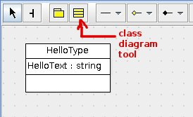
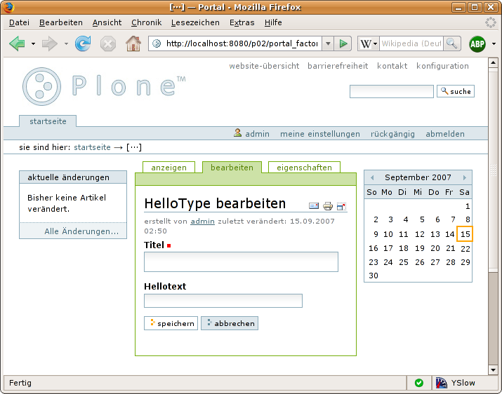

Hello World¶
Description
Create your first minimal content type with ArchGenXML
Open the UML tool of your choice. Make a new UML model and give it a name HelloWorld. Then add a class diagram (most UML tools do this automatically).
Choose the tool for class creation and add a class to the diagram. Give it a name such as HelloType and add an attribute HelloText with type string. The helloworld3.zargo (Plone 3.0) / helloworld25.zargo (Plone 2.5) models were created using ArgoUML, and contain the type as described above.
Generating the product¶
Save your model as helloworld.zargo (ArgoUML) or helloworld.zuml (Poseidon), or export it as an XMI file with the name helloworld.xmi. Then go to the command line and execute:
$ archgenxml helloworld.zargo
ArchGenXML will begin code generation. When it completes, you will have a new folder HelloWorld on your file system. Its contents looks like:
HelloWorld/
|-- Extensions (only with plone_target_version=2.5)
| |-- Install.py
| `-- __init__.py
|-- HelloType.py
|-- __init__.py
|-- config.py
|-- configure.zcml
|-- i18n
| `-- generated.pot
|-- interfaces.py
|-- locales
|-- profiles
| `-- default
| |-- HelloWorld_marker.txt
| |-- cssregistry.xml
| |-- factorytool.xml
| |-- import_steps.xml
| |-- jsregistry.xml
| |-- metadata.xml
| |-- skins.xml
| |-- types
| | `-- HelloType.xml
| `-- types.xml
|-- profiles.zcml
|-- refresh.txt
|-- setuphandlers.py
`-- skins
|-- helloworld_images
| `-- HelloType.gif
|-- helloworld_styles
`-- helloworld_templates
Installing and using the generated product¶
Move the whole folder HelloWorld to your Zope/Plone 3 instance's Products folder. Restart Zope, open Plone in a browser and log in as Manager. Choose Plone Setup from the personal bar and choose Add/Remove Products. A new product HelloWorld should now appear in the list of products available for install. Choose it and click install. Go to your personal folder. In the list of addable items, you'll find the content type from the new product. Add a test instance to see if it works.
That's the trick. By the way: the title is always part of the schema. But don't worry: you can hide or recycle it later.